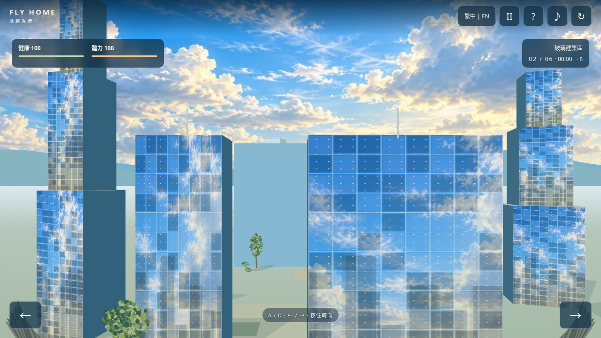
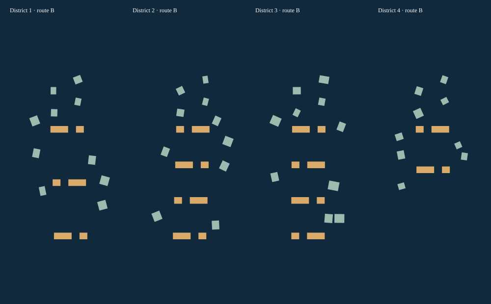
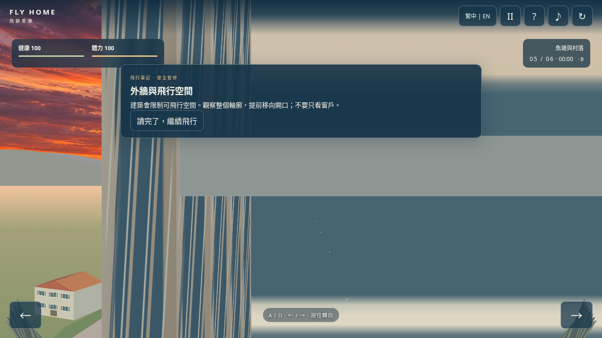
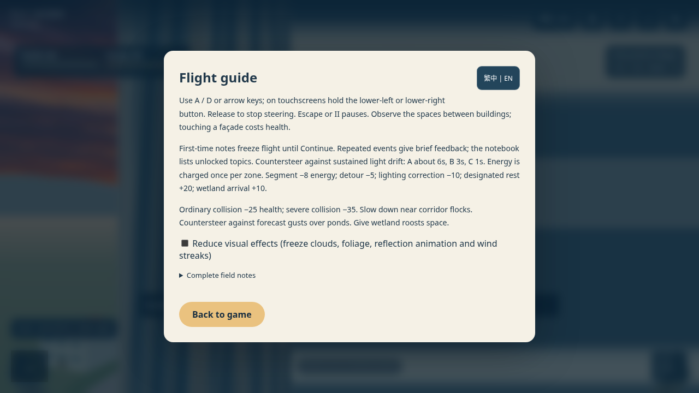
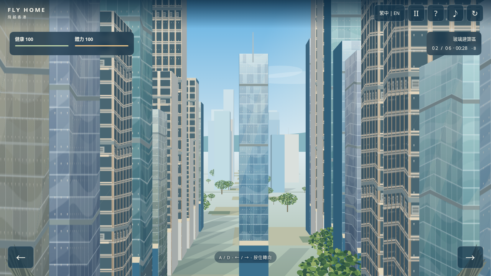
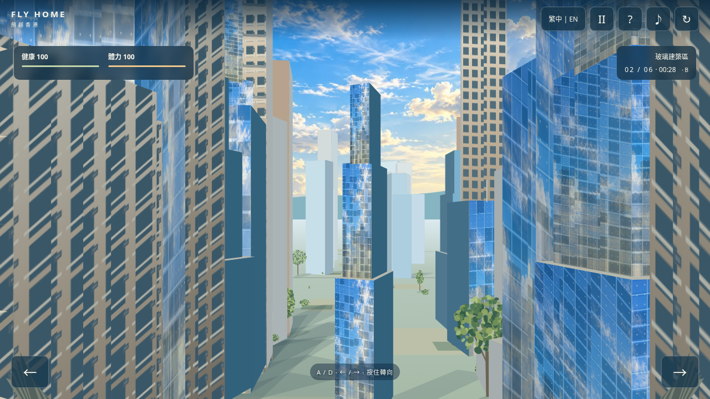

新增：飞行挑战与事件学习
试玩最新版本 · 知识系统设计表及来源 · 本轮验证与限制
以下是本轮实际画面；后面的视觉更新资料保留作上一轮历史记录。

新的错位通行空间
四地区 B 路线俯视示意，金色为主要操作挑战
首次知识卡：冻结飞行，读完继续
已解锁的双语笔记
Fly Home · 视觉更新
保留玩法、路线、双语与触屏操作；更新确定性街区、六种建筑结构、天空反射及分层绿地。
原生天空为 1774 × 887，工具未返回请求的 4096 × 2048。手机贴图为 960 × 480。未以放大图片冒充 4K。当前仅在云端 Chromium 验证，未使用实体手机。
实际游戏截图
使用真实 Canvas 渲染，并由测试入口固定进度和 B 路线以便比较；不是手工效果图。点击查看原始 PNG。
反射连续画面
同一场景连续小幅前移与横移的八张截图编码；也可逐张查看 第一帧、最后一帧。
同尺寸修改前后

修改前 · 1280 × 720
修改后 · 1280 × 720性能实测
Linux / Chromium 154.0.8037.57，headless 软件渲染，1280 × 720，DPR 1，B 路线同场景。固定场景三次测量平均，移动对比使用同轨迹。
| 指标 | 修改前 | 修改后 |
|---|
| 固定场景 RAF FPS | 25.66 | 23.04 |
| 同轨迹移动 RAF FPS | 27.75 | 22.02 |
新增效果仍有性能成本，未达到无回退；不能承诺手机 60 FPS。完整性能说明 · 原始数据与 21 项断言 · 正式文件烟测。
素材与限制
来源、生成方式与使用许可 · 素材分辨率和字节数。
Canvas 伪 3D 使用近似反射与窄条透视；近距离重叠物体可能有排序误差，远处建筑有意省略窗户材质。离线 HTML 内嵌天空，已在阻断外部资源的条件下测试其内容；管理浏览器禁止 file://，尚未直接验证双击打开。GitHub Pages 的部署与线上验证状态以交付说明为准。